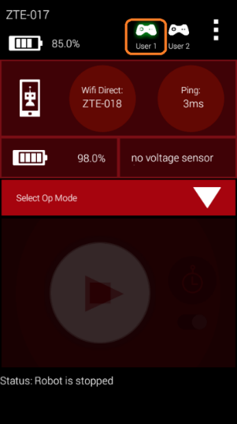
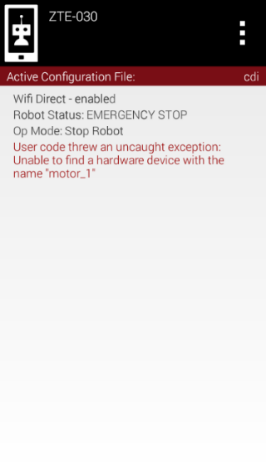
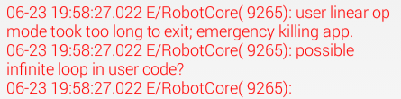
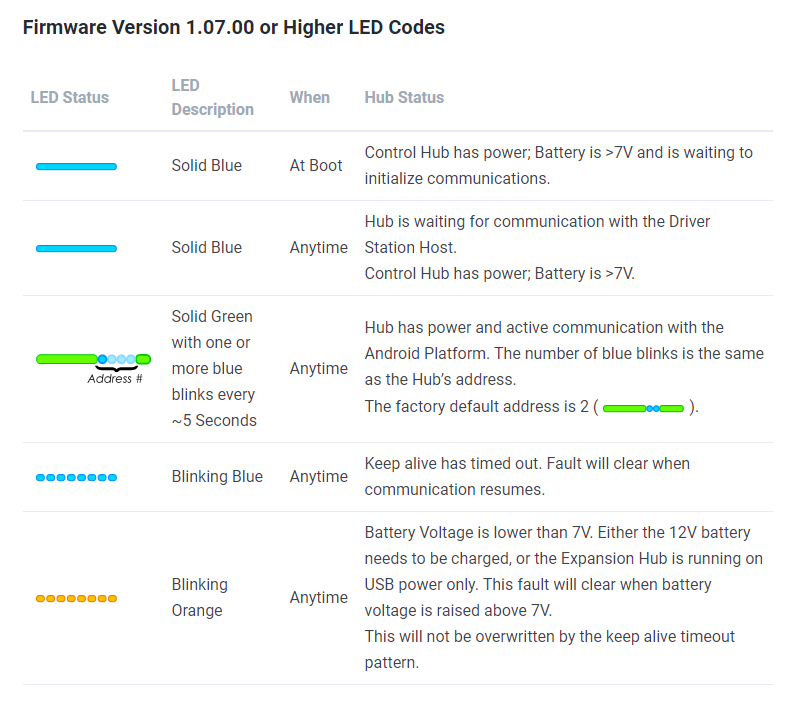
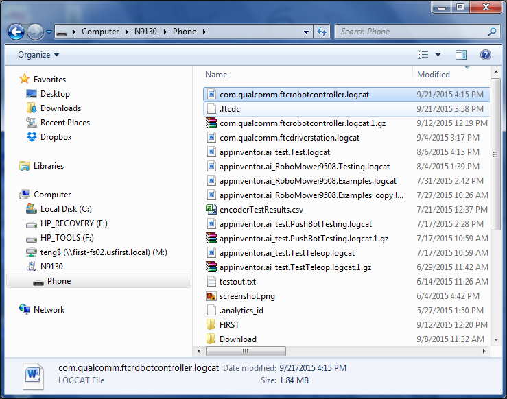

Troubleshooting Common Control System Issues
This page collects common Control System problems reported by teams at events, along with the checks and fixes an FTA, CSA, or WTA can walk a team through.
FIRST Tech Challenge Driver Station
Gamepad is Not Recognized
If a gamepad is recognized by the FIRST Tech Challenge Driver Station app, then whenever there is activity with that gamepad, the appropriate gamepad icon in the upper right-hand corner of the Driver Station main screen will be highlighted in green.

The gamepad icon is highlighted in green when the gamepad is recognized and active.
If you encounter a team who is having problems with input from the gamepad, check the following items:
If a team is using Logitech F310 gamepads, make sure the switch on the bottom of the gamepad is set to the “X” position (Xbox emulation mode).
Note
In SDK 9.1 and newer, this is not necessary — both “X” and “D” mode are supported.
Make sure the gamepad has been designated as either driver (user) #1 or driver (user) #2. To designate a gamepad as driver #1, press the START button and the A (green) button on the F310 gamepad. To designate a gamepad as driver #2, press the START button and the B (red) button.
Note
Driver Station software version 5.5 and later automatically recognizes the type of FTC-approved gamepad a team is using. Teams no longer need to configure the gamepad type manually.
Check the wired connection. If the gamepad was temporarily disconnected from the Driver Station, the driver will have to re-designate which driver they would like to be by pressing START and A (driver #1) or START and B (driver #2). The Driver Station can sometimes automatically recover a lost joystick, but if both gamepads are the same type and both get disconnected at the same time, the user will have to re-designate the driver position for each gamepad.
Disable Advanced Gamepad Settings. If the app is crashing when the gamepad is plugged in, or the gamepad is not being detected properly, disabling Advanced Gamepad Settings is one step to triage the issue. This has only been shown effective when troubleshooting first-generation DualShock 4 controllers, and Advanced Gamepad Settings are not required to use a gamepad.
Gamepad Joysticks Were Not in Neutral Position When Connected to Driver Station
Teams can connect up to two gamepads to the Driver Station Android device. Each gamepad has a pair of joysticks that the team’s drivers use to control their robot. The gamepads are usually connected directly to a REV Driver Hub or through a non-powered USB hub to the USB Micro OTG port on an Android smartphone Driver Station. When the gamepads are first connected, the Android device calibrates the zero, or neutral, position of the two analog joysticks on each gamepad.
If a user has deflected or moved the joysticks while they are being plugged in, the Driver Station might use that non-zero position as the calibrated reference point. This can cause unexpected behavior when an OpMode runs — for example, if the user starts the OpMode and the robot starts driving without the user touching the joysticks, an improperly calibrated joystick could be the cause.
To clear this problem, stop the OpMode, disconnect the gamepads from the Driver Station, and then reconnect the gamepads, making sure the joysticks are in their neutral position.
Gamepad Disconnects While Joysticks are in a Non-Neutral Position During an OpMode Run
If a team is running a driver-controlled OpMode and a gamepad gets disconnected from the Driver Station while its joystick was in a non-neutral position, the control system might remember the last driver command. If the team then stops the OpMode with the STOP button, reconnects the gamepad, and runs the OpMode again, it might receive the remembered, non-neutral input and cause the robot to move. To correct this, have the user move the joysticks on the gamepad around briefly and then let them return to their neutral positions.
Driver Station Goes to Sleep While OpMode is Running
This problem typically occurs when the sleep timer is set too low and the Driver Station goes to sleep while an OpMode is running. To fix it, go to the phone’s Settings -> Display -> Sleep, and set it to sleep after 10 or 30 minutes of inactivity.
Note
This is not necessary on the Driver Hub.
Driver Station Powers Off Unexpectedly
This problem occurs when an Android device has a low battery. If a device is unexpectedly shutting off, check that it has an adequate charge.
Unable to Find a Specific OpMode in the Driver Station’s List of Available OpModes
If a team used Android Studio and the FIRST Tech Challenge SDK to create
an OpMode but cannot find it in the Driver Station’s list of available
OpModes, ask the team if they remembered to register their OpMode in the
FtcOpModeRegister class. If they created the OpMode but did not register
it, it will not be visible on the Driver Station.
Gamepad Left Joystick is Not Working
If a gamepad’s left joystick is not working but the right joystick is, the probable cause is that the MODE button adjacent to the left joystick was activated. When the green light next to the MODE button is lit, the gamepad swaps the functionality of the D-pad with the left joystick. Press and release the MODE button to turn the light off and restore the left joystick’s functionality.
Robot Controller
User Code Threw an Uncaught Exception: null
This error occurs when a method is called on an object that is null at the time of the call. To address it, first look at the robot log file to find where to search for the problem. To access the log files, open the settings in the Robot Controller app and select View Logs, then scroll up until a block of red text appears and look for a line resembling:
com.qualcomm.ftcRobotcontroller.opmodes.YourOpmodeName.loop(YourOpmodeName.java:XX)
The XX is the line number where the null error occurred, and is a good
starting point for addressing the issue. For example, if this line is
accessing a method of an ElapsedTimer object, make sure the object was
instantiated with objectname = new ElapsedTimer(); somewhere in the code
before that line.
User Code Threw an Uncaught Exception: number XXX is invalid
This exception is typically thrown when a motor or servo is set to a value less than -1 or greater than 1. To find which line of code threw the exception, check the robot logs the same way as above — open the settings in the Robot Controller app, select View Logs, scroll up to the first block of red text, and find a line resembling:
com.qualcomm.ftcRobotcontroller.opmodes.YourOpModeName.loop(YourOpModeName.java:XX)
The XX is the line number where the exception was thrown. Remember: the
setPower() method for DcMotor can only be passed a value from -1 to
1, and the setPosition() method for Servo can only be passed a value
from 0 to 1. If a value is likely to fall outside of the allowed range, the
Range.clip() method can be used to constrain it.
Unable to Find a Hardware Device with the Name “…”
A very commonly encountered error occurs when a user tries to run a specific OpMode and the Robot Controller app reports “User code threw an uncaught exception: Unable to find a hardware device with the name ‘…’”, where “…” is the name of the hardware device the OpMode is trying to access. This happens when the OpMode specifies a device name that does not match the corresponding name in the FIRST Tech Challenge SDK’s hardware map, and it applies to apps created using Android Studio.

The name used by the OpMode must match the name used in the configuration file for the device exactly.
If you are at an event and encounter this error, ask the team to verify that the name they use in their OpMode to reference a hardware device matches the name specified for that device in their Robot Controller’s configuration file. The spelling is case sensitive, so the names must match exactly.
Common Programming Errors
It can be difficult and frustrating to debug problems with a team’s OpMode. However, there are some commonly encountered programming errors that can cause problems, described in the sections below.
Neglecting to Insert waitForStart() Statement
For a LinearOpMode, it is important that the programmer included a
waitForStart() statement in the OpMode. Any statement that occurs after
waitForStart() is executed only after the user touches the START arrow
on the Driver Station. If the programmer forgot to include a
waitForStart() statement, the robot might behave unpredictably — for
example, it might start moving instantly as soon as the OpMode is selected.
Uninterruptible Threads
Teams often incorporate loops in their robots’ OpModes. Advanced programmers might also spawn threads within their OpModes to execute commands in parallel with the main OpMode process. If an OpMode contains a loop or spawns a separate thread, it is important that the loop or thread is written so that it can be interrupted by the Java application when necessary.
This can be illustrated with an example. Suppose a team writes the following OpMode:
// turn on motors.
motorL.setPower(0.2);
motorR.setPower(0.2);
// use while loop to run the cycle indefinitely.
while (true) {
// stop if touch sensor is pressed.
if (sensorTouch.isPressed()) {
// stop OpMode.
motorL.setPower(0);
motorR.setPower(0);
break;
}
}
In this example, the motors turn on and the OpMode loops indefinitely until
the touch sensor is pressed. This OpMode is uninterruptible: if the user
presses the STOP button on the Driver Station before the touch sensor is
pressed, the while loop keeps running and the OpMode is not properly
stopped. This can cause the robot to behave erratically and become
unresponsive — the robot continues to run, and the Driver Station continues
to display the STOP button, even after the user has pressed it.
The Robot Controller app can detect potential “runaway” OpModes. If the app detects what it thinks is a runaway or unresponsive OpMode, as a safety measure it will record an error message in the log file and then crash itself — unfortunately, this is the only way to stop an unresponsive thread.

If the app detects a potential unresponsive OpMode, it logs an error and then aborts itself.
The correct way to prevent a runaway or unresponsive OpMode is to use an
interruptible method as the loop condition, such as opModeIsActive(), or
to put a sleep statement somewhere in the loop. The following code exits
properly if the user presses the STOP button on the Driver Station before
the touch sensor is pressed:
// turn on motors.
motorL.setPower(0.2);
motorR.setPower(0.2);
// use while loop to run the cycle indefinitely.
while (opModeIsActive()) {
// stop if touch sensor is pressed.
if (sensorTouch.isPressed()) {
// stop OpMode.
motorL.setPower(0);
motorR.setPower(0);
break;
}
}
REV Robotics Control and Expansion Hubs
The REV Expansion Hub is a compact hardware controller with 4 DC motor ports, 6 servo ports, and multiple digital, I2C, and analog ports. The REV Control Hub is a REV Expansion Hub with an integrated Android device.
Detailed information and specifications on the Control and Expansion Hubs are available in the REV Robotics Control Hub and Expansion Hub Getting Started Guides, published on the REV Robotics Control System documentation site.
This section contains important tips for troubleshooting a robot that uses a REV Robotics Control and/or Expansion Hub.
Resetting a REV Control Hub Wi-Fi Password
A common issue for teams is resetting the REV Control Hub’s Wi-Fi password to a new value, which is required as part of field inspection.
On the Driver Station app, tap the three dots (⋮) and select Program and Manage. This may take up to about 30 seconds to load. Then follow these steps, adapted from REV’s Updating a Control Hub guide, to update the password:
Select the three lines in the upper right-hand corner.
Select Manage from the menu that pops up.
Scroll down to Wi-Fi Settings and enter the new password twice in the input fields.
Select Apply Wi-Fi Settings.
Unpair and re-pair the Robot Controller and Driver Station.
Important
Make sure to write down the new password somewhere safe.
Power Cycle Time
FIRST recommends that teams power down the device for a minimum of 5 seconds before powering their Control or Expansion Hub back on again.
Logic Level Converters
The REV Robotics Control and Expansion Hubs operate using 3.3V digital logic levels. Older Modern Robotics-compatible sensors and encoders operate using 5V digital logic levels. If a team would like to use a 5V device that was compatible with Modern Robotics hardware controllers, the team will need a Logic Level Converter (available from REV Robotics) to connect the 5V device to the 3.3V Control or Expansion Hub ports.
5V Modern Robotics-Compatible Encoders
If a team has a 12V DC motor with a 5V encoder designed to connect to a Modern Robotics DC motor controller, the team will need one REV Robotics Logic Level Converter per 5V encoder to connect the encoder to the Control or Expansion Hub.
5V Modern Robotics-Compatible I2C Sensors
If a team has a 5V, Modern Robotics-compatible I2C sensor, the team will need a REV Robotics Logic Level Converter plus a REV Robotics Sensor Cable Adapter to properly connect the 5V device to a Control or Expansion Hub.
LED Blink Codes
The REV Control and Expansion Hub have the following blink codes.

REV Control and Expansion Hub blink codes.
The REV Robotics website maintains an up-to-date version of this chart; see the REV Hub LED blink codes page for the current list.
Troubleshooting Dual Expansion Hubs
Teams can daisy-chain two REV Robotics Expansion Hubs together to provide additional I/O ports for their robot. Details on how to configure and troubleshoot a dual Expansion Hub robot are included in the REV Robotics Expansion Hub Getting Started Guide, and in Adding an Expansion Hub.
If a team is having a problem with a dual Expansion Hub configuration, it is important that the FTA or CSA verify that each of the daisy-chained Expansion Hubs has a non-conflicting serial address. By default, all Expansion Hubs are assigned an address of 2 at the factory, so a team that wants to connect two Hubs together must first change the serial address of one of them to prevent it from conflicting with the other Hub’s address.
An FTA or CSA can connect each Expansion Hub individually (not daisy-chained) to a Robot Controller and check its blink pattern to determine the Hub’s address. Details on how to change the address of an Expansion Hub are included in Adding an Expansion Hub.
Use a Pair of Android Devices to Monitor Wi-Fi Channel
It is useful to have a set of Android devices that you can use to monitor activity on a wireless network. You can configure a FIRST Tech Challenge Robot Controller to have an empty configuration file (no devices attached), then connect to it with the Driver Station app on a second Android device. Use the ping time shown on the Driver Station as an indicator of network quality on the devices’ current operating channel.
Use the Log Files to Help Troubleshoot Problems
Both the Robot Controller and Driver Station apps log information that can be useful for diagnosing problems with the system. On the Robot Controller app, tap the three vertical dots in the upper right-hand corner of the main screen and select View Logs to display its log file.

Windows users can use File Explorer to locate and copy the log file.
For a full walkthrough of using log files to diagnose problems, see Using Log Files to Troubleshoot Problems.